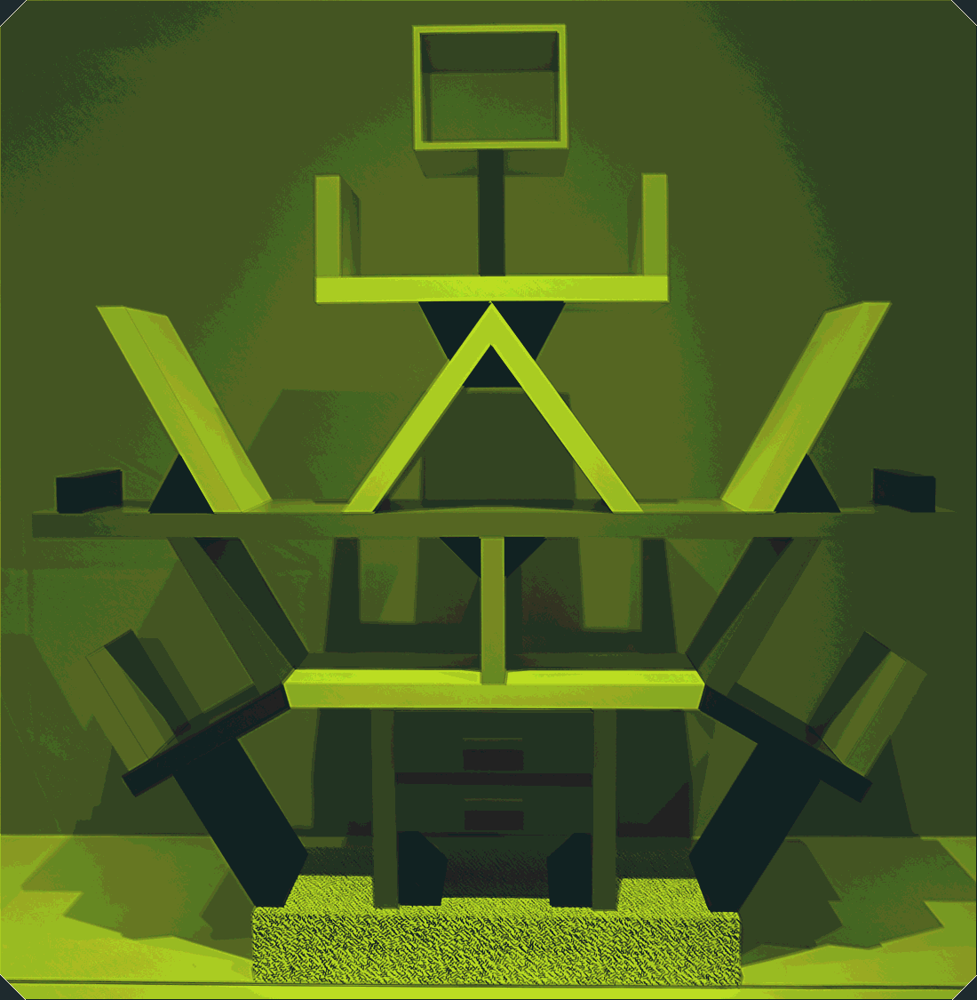
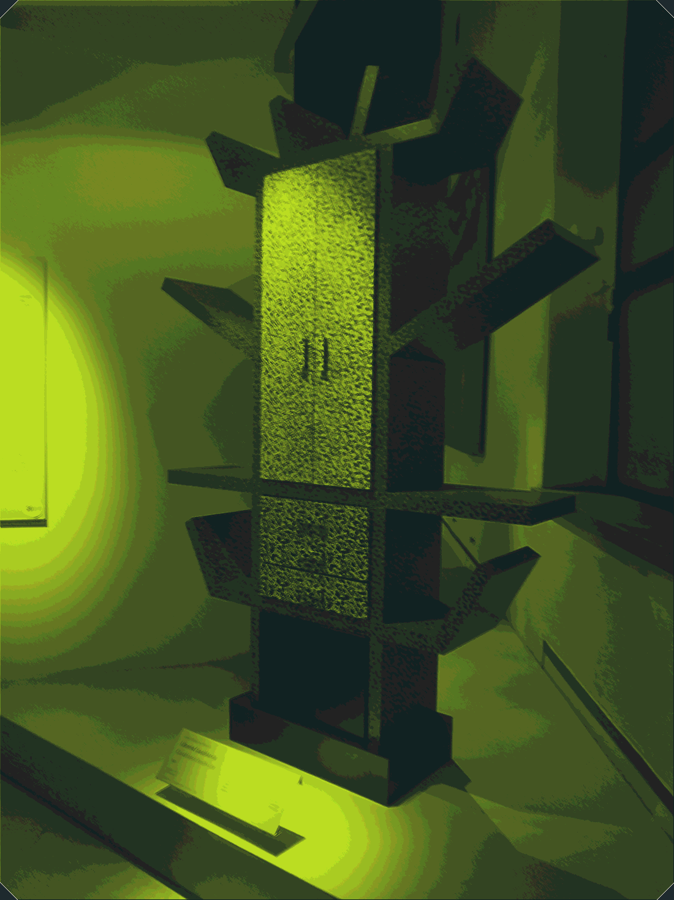
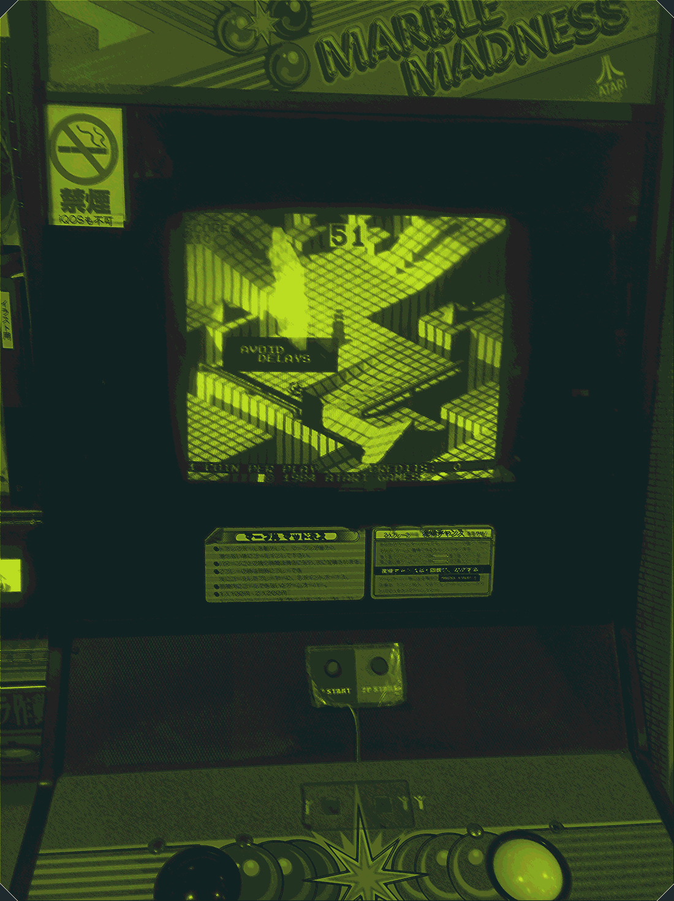
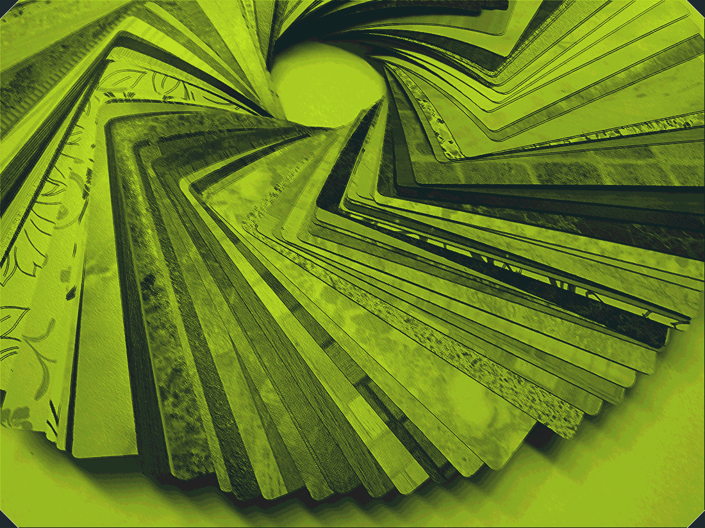
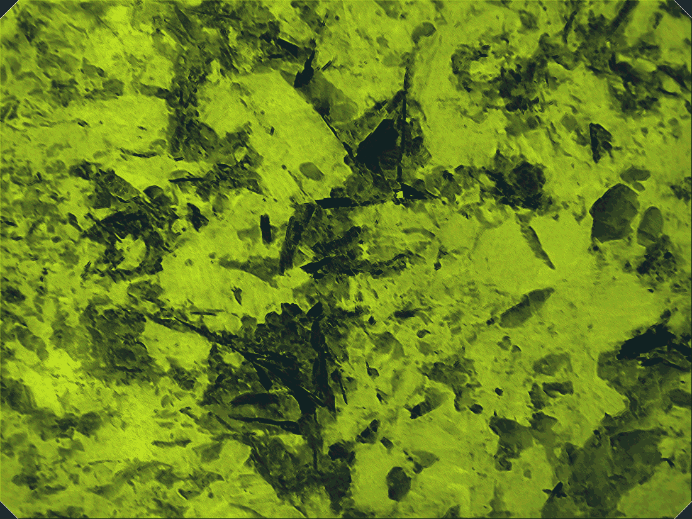
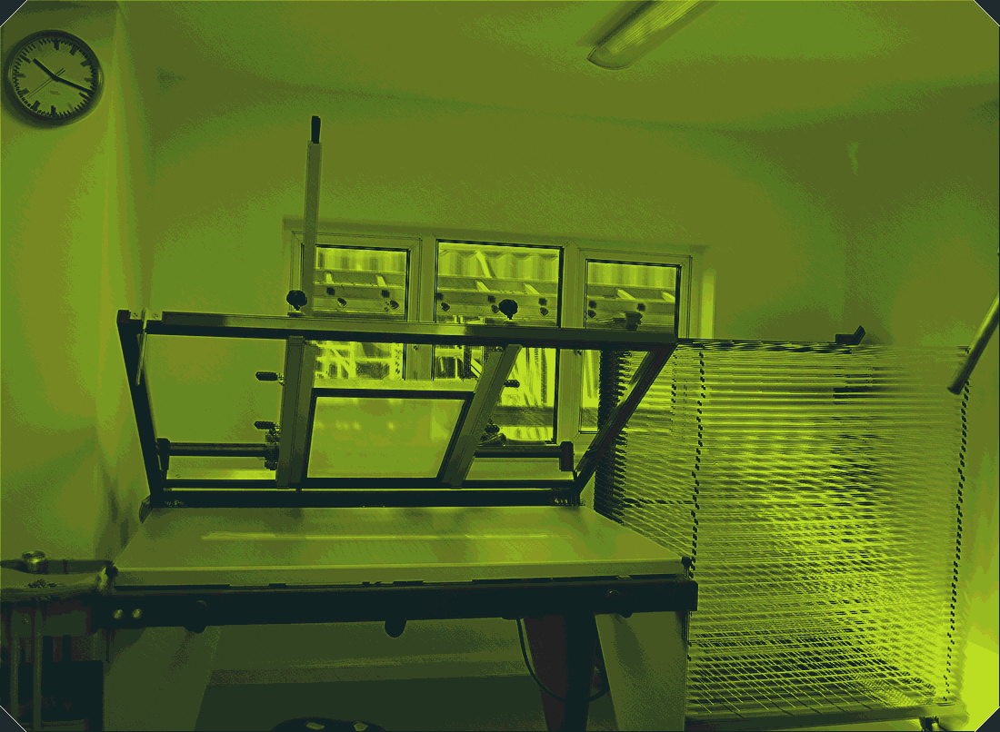

01
直切练习场
上沿一条 45° 斜切，跨两栏，是这面墙的基准角。
已凿开
冲切样板 A 版 · 8 栏栅格 · 6px 基线 · 洞口间隙按 12 / 28 / 44px 三级跳变 · 斜纹只允许 45° 与 135°
已凿开 03 / 07
当前关卡 03 青柠管道
这面墙有七个洞，凿开三个就算通关
七个洞口按 3 / 2 / 1 / 1 的行数递减错位堆叠，最大的一格跨 4 栏，最小的一格只占 1 栏并故意留空；整面墙的重心压在版面左侧 38% 处。滚动到 60% 时第一层向右平移 40px，露出斜纹方向翻转的第二层。
01
上沿一条 45° 斜切，跨两栏，是这面墙的基准角。
已凿开
02
整格下移 82px，下沿 135° 收边，跳上去之前先看清落点。
未开
03
跨四栏的最大洞口，斜纹角度与邻格相反；管道从这一格穿到第二层。
当前关卡
04
斜纹相位每格错开 8px，走过一排接缝会跳一格。
已凿开
05
斜纹贴图取片失败，已用 45° 单色斜纹兜底，热区仍可点击。
兜底中 · MASK-05
06
洞口翻过来是第二层的另一套顶点，斜纹方向跟着翻转。
未开
07
这一格还没开。凑齐三条斜线就凿得动。
未开
冲切七个洞口按 01–07 顺序落下，每洞 90ms，缓动 steps(3)；落位前先出现 0.5px 米白翻边，再出现洞口里的画面。
平移滚动到 60% 时第一层向右平移 40px，480ms，过冲后回弹 6px，露出斜纹翻转的第二层；平移只走 transform，不逐帧改顶点。
降级系统设了减少动态效果时，平移瞬时完成、洞口直接落位，关卡切换的闪烁压到 100ms 不透明度变化；窄屏的再发明形式见状态区。
错误码 MASK-05洞口 05 的斜纹贴图加载失败（错误码 MASK-05），已用 45° 单色斜纹兜底，热区仍可点击。
等待操作：当前关卡 03，已凿开 3 个洞口。
热区不小于 44×44px，Tab 顺序按洞口编号 01–07 硬性排列，不跟随版面错位。
| 洞口 | 关卡 | 记号 | 斜边 | 斜纹角度 | 热区 | 状态 |
|---|---|---|---|---|---|---|
01 | 直切练习场 | 上沿 45° | 45° | 210×214 | 已凿开 | |
02 | 高台跳格 | 下沿 135° | 135° | 210×164 | 未开 | |
03 | 青柠管道 | 上下对切 | 45° + 135° | 428×322 | 当前关卡 | |
04 | 斜纹回廊 | 上沿 45° | 45° | 316×232 | 已凿开 | |
05 | 丝印暗房 | 下沿 135° | 兜底 45° 单色 | 210×194 | MASK-05 | |
06 | 翻面空腔 | 上下对切 | 135° | 316×182 | 未开 | |
07 | 留空的角 | 只留 1 栏 | 45° | 106×136 | 未开 |
01020304050607
04 与 05 之间的间距比其它编号窄 3px：街机面板丝印常常为躲开螺丝孔而挤掉一点间距，热区不受影响。
所有照片先做 #1E2A2E 与 #B5D626 双色分色：青柠版吃亮部、墨绿版吃暗部；再用同一套 45° 八边形遮罩冲切，边缘保留 1px 套色错位，禁止羽化。






四类状态都在这一屏里可见，不需要点击才出现。
七个洞口按 01–07 顺序做冲切落下，每洞 90ms，缓动 steps(3)；落位前先出现 0.5px 米白翻边，再出现洞口里的画面。
这一格还没开。凑齐三条斜线就凿得动
MASK-05洞口 05 的斜纹贴图加载失败（错误码 MASK-05），已用 45° 单色斜纹兜底，热区仍可点击。
系统设了 prefers-reduced-motion: reduce 时：墙面的 40px 平移与 6px 回弹不再过渡、洞口直接落位、关卡切换的闪烁压到 100ms 不透明度变化。窄屏的再发明形式保留参数——900px 以下改双列错位咬合、互压 16px、斜纹边框收窄到 4px；768px 以下改上下咬合、互压 20px；角度仍只允许 45° 与 135°。